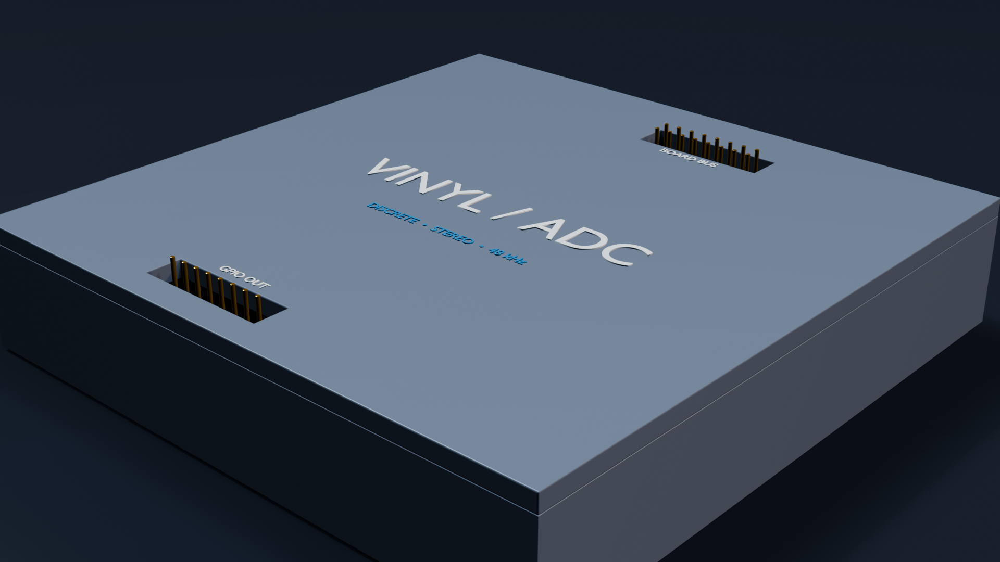
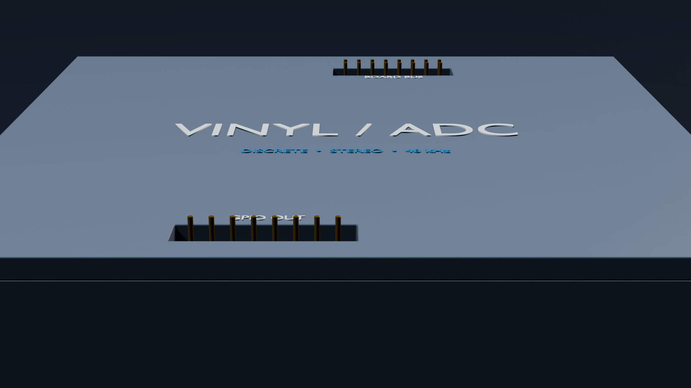
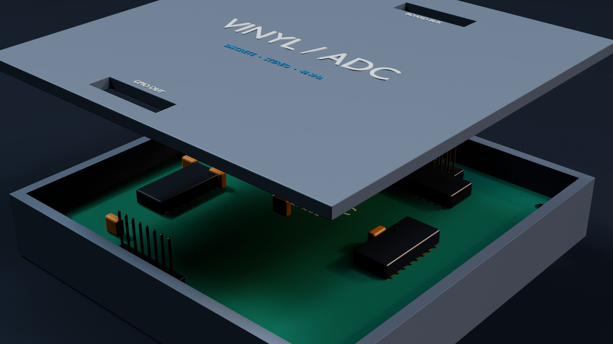

KiCad
The 2026-09-03 backup supplies the 100 mm square edge cuts, exact footprint centres and M3 hole pattern.

Discrete audio conversion
A stereo, third-order delta-sigma converter translated from routed KiCad hardware into a compact 3D-printable product: the digital board, four-point M3 mounting system and top-entry interfaces live inside a two-part matte enclosure.
The dimensions and interface positions come from the latest routed digital PCB backup. Where the repository does not define a finished-system detail, it remains explicitly TBD.
Neutral studio lighting reveals the soft radii and warm graphite matte-PLA finish; the exploded frame exposes the seated digital PCB and vertical headers.


A reproducible, metric workflow keeps presentation geometry tied to the electrical design.
The 2026-09-03 backup supplies the 100 mm square edge cuts, exact footprint centres and M3 hole pattern.
KiCad CLI exports a populated STEP with copper, soldermask, silkscreen and library component models.
Blender Python constructs a support-free base and locating-lip lid around the board with top-entry header access.
A procedural board proxy, matte materials, studio floor and scale-independent lighting produce three offline renders.